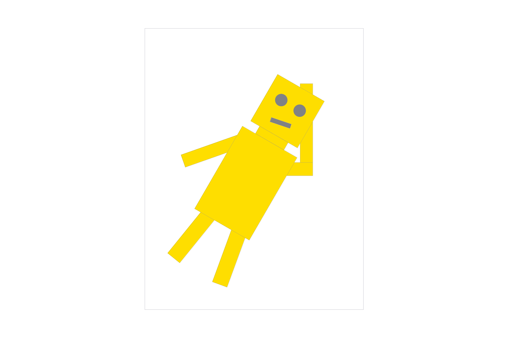
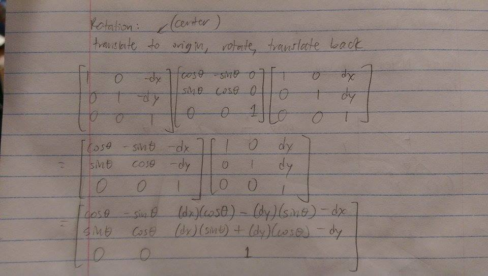

Assignment 1: Rasterizester
Owen Jow
In a raster display, images are represented by thousands of colored pixels in a grid. Alone, a pixel occupies only a tiny amount of space. When viewed alongside all of its neighbors, however, the colors can come together to form a surprisingly cohesive picture. The concept is similar to bead art (shown below), but on a greatly amplified scale.
Inevitably, a question must arise: how does the computer decide which color to assign to each pixel? In theory, it should already know what image it wants to draw. The problem, then, is translating that image into pixels with specific colors. This process is known as
rasterization – the act of turning points, lines, and general shapes into pixels in the framebuffer. We can think of rasterization as a function with geometric primitives as input and a set of "fragments" (i.e. attribute values corresponding to pixels) as output. In the overall graphics pipeline, these fragments undergo a few additional stages of processing before finally being displayed on the screen.
Assignment 1, "Rasterizester," involves the implementation of a program that reads SVG files and presents them to the user for viewing. For this to work, the SVG elements (lines, rects, polygons, etc.) must be converted into colored pixels. In other words, the SVG elements must be rasterized. We'll have to account for every pixel that is covered by an element, while also interpolating colors and textures across these locations. Let the fun begin...
Part 1: Rasterizing Lines
Bresenham's integer-only line drawing algorithm operates on top of a pretty simple foundation. Say the slope of the line is between 0 and 1, inclusive. Then if we have a pixel at (x, y), the pixel to the right should either be drawn at (x + 1, y) or (x + 1, y + 1). There are no other options! We cannot draw a pixel at (x + 1, y + 0.4) – even if the slope is 0.4 – since pixels are integer-valued. And if the slope is between 0 and 1, we will always increment x more frequently than y – hence the x + 1 instead of x.
But sometimes the slope will be 0.4. So how do we deal with the error? Well, although we act on integer coordinates, internally we can still keep track of our line positions as a series of floats. Accordingly, we can tell where we "actually" are on the coordinate plane, and decide whether the next point, (x + 1, y + slope), is closer to (x + 1, y) or (x + 1, y + 1). [We'll draw it at the point it's closer to.] This is the fundamental idea behind Bresenham line rasterization. To formalize nearness, we use an epsilon value that records error: here, error is defined as the vertical distance from the rasterized value to the "actual" value. When that error is less than 0.5, we plot at (x + 1, y) since an error amount between 0 and 0.5 must be closer to 0 than 1. Otherwise, the error value is 0.5 or greater and we'll plot the next point at (x + 1, y + 1).
The Bresenham algorithm adopts a similar pattern for lines with other slopes. There are four such slope cases – one of which, 0 <= slope <= 1, we have already examined. When -1 <= slope < 0, the point to the right always lies at either (x + 1, y) or (x + 1, y - 1). Meanwhile, if slope > 1 or slope < -1, then we should increment y every time and check if the next point is at (x, y + 1) or (x ± 1, y + 1). Pseudocode for the case where slope > 1 is as follows:
eps = 0, x = whichever x goes with the first y
for every y [increasing]; do
plot the point at (x, y)
if eps + the slope < 0.5; then
eps += the slope
else
increment x
eps += the slope - 1
endif
endfor
Here is the integer-only version:
eps' = 0 # let eps' = eps * dy
x = whichever x goes with the first y
for every y [increasing]; do
plot the point at (x, y)
if 2 * (eps' + dx) < dy; then
eps' += dx
else
increment x
eps' += dx - dy
endif
endfor
To simplify the problem, our algorithm always draws the line from left to right if incrementing
x (i.e. -1 <=
slope <= 1), and from top to bottom if incrementing y (i.e.
slope < -1 or
slope > 1).
|
Figure 1: Screenshot of svg/basic/test2.svg at sample rate 1
|
Part 2: Rasterizing single-color triangles
So we can rasterize lines. That's pretty cool, but imagine we wanted to model surfaces. Depending on the resolution, it could take a lot of lines to fill a circle! That's where triangles come in. As one of the simplest polygons, the triangle serves as a "lowest common denominator" for areas. You can decompose any 2D shape into a bunch of triangles, which gives it a niche as graphics' go-to for area primitives. When every polygon is represented by triangles, optimizing only the triangle rasterization process ends up causing an efficiency boost for everything else, too. How nice!
It turns out that rasterizing a triangle isn't so different from rasterizing a line. Basically, we want to sample points that might be in the triangle (i.e. every point in the bounding box), and see if they actually are. If a point is contained within the triangle, then it should be plotted at once!
Assuming we have its vertices (as a, b, and c), this is how we can convert an input triangle into [framebuffer] pixel values:
calculate the min x- and y- values among a, b, c
calculate the max x- and y- values among a, b, c
for every x from min_x to max_x; do
for every y from min_y to max_y; do
if (x, y) is in the triangle; then
plot the point at (x, y)
endif
endfor
endfor
There's only one thing missing. How do we know if a point is inside the triangle or not? In other words, what is the coverage function? Before answering this question, let's take a look at
barycentric coordinates.
Barycentric coordinates serve as a way to define a separate coordinate system. In that coordinate system, we have an origin (
a) and two other points (
b and
c). We concern ourselves with the two basis vectors (
b -
a and
c -
a) shooting out from
a in the direction of
b and
c. Using them, we can define any point as
a + β(b - a) + γ(c - a)
Note that β and γ are arbitrary scalars that determine how far along
b -
a and
c -
a we travel. If β were 1 and γ were 0, for instance, the point in the barycentric coordinate system would be
b. Also, if β < 0 or γ < 0, we are definitely not within the bounds of triangle
abc! Why? Because in arriving at our point, we traveled (starting from the origin)
away from either
b or
c... and, in doing so, set ourselves outside of the triangle right off the bat. Since by definition
b and
c cannot be the same vector, there's no going back – we're outside of the triangle for good.
Recall the original question:
how do we know if a point is inside the triangle or not? Evidently, we can use barycentric coordinates as a means to conduct this test. By much the same reasoning as before (i.e. don't travel away from
b or
c), we'll require that 0 <= β <= 1 and 0 <= γ <= 1. Past that, we'll also require that the third barycentric coordinate, α (calculated as 1 - β - γ), falls within an identical range. To see why, it's helpful to look at barycentric coordinates as proportional distances. In the below image, it's clear that in order for a point (α, β, γ) to be inside the triangle, each coordinate can be at most 1:
|
Figure 2: Barycentric coordinates as proportional distances
|
To sum it up, a point is inside the triangle if it passes all three of these tests:
0 <= α <= 1
0 <= β <= 1
0 <= γ <= 1
So now we'll need to convert global coordinates into barycentric coordinates. Say our triangle has vertices that we'll call 0, 1, and 2, for which each has an
x- and a
y- coordinate. Additionally, assume that we have a line f02(
x,
y) = 0 that passes through points 0 and 2. Let's use the fact that β for a point (
x,
y) is equal to f02(
x,
y) / f02(
x1,
y1):
f01(x, y) = (y0 - y1) * x + (x1 - x0) * y + x0 * y1 - x1 * y0
f02(x, y) = (y0 - y2) * x + (x2 - x0) * y + x0 * y2 - x2 * y0
β = ((y0 - y2) * x + (x2 - x0) * y + x0 * y2 - x2 * y0)
/ ((y0 - y2) * x1 + (x2 - x0) * y1 + x0 * y2 - x2 * y0)
γ = ((y0 - y1) * x + (x1 - x0) * y + x0 * y1 - x1 * y0)
/ ((y0 - y1) * x2 + (x1 - x0) * y2 + x0 * y1 - x1 * y0)
α = 1 - β - γ
|
Figure 3: Screenshot of svg/basic/test4.svg under default viewing parameters
|
These are the timings for triangle rasterization in
svg/basic/test4.svg with a sample rate of 1:
| Triangle 1: 2.530 ms |
Triangle 2: 1.415 ms |
Triangle 3: 0.961 ms |
| Triangle 4: 2.312 ms |
Triangle 5: 0.239 ms |
Meanwhile, rasterizing everything in
svg/hardcore/02_degenerate_square2.svg takes about 6.857 seconds.
Part 3: Antialiasing triangles
If you look closely at the triangles' edges in Figure 3, you might notice that they're not as well-defined as they ought to be. In other words, there are jaggies – or staircase patterns – on some of the edges. Jaggies are a byproduct of the limitations on our pixel grid. The pixels are not infinitely small, so on edges that are very steep or almost flat (or in images with low resolution), there will almost always be imperfections.
Luckily, we can get around this by supersampling. In order to smooth out colors [both on edges and in general], we can take a lot of samples, more than we need, within each pixel. We can then find the final color by downsampling, which basically means we average the values for all the samples we take. The intuition is that if a red triangle covers 10 percent of a pixel, then the pixel should be 10 percent red.
In the GUI, the user can adjust the sample rate for the rasterizester. This describes the number of samples that we'll use per pixel, and it will always be a perfect square (1, 4, 9, or 16). Thus, if we represent a pixel as a square and call the top left corner (0, 0), we can evenly space the samples throughout the pixel by starting at (1 / (sqrt(sample_rate) + 1), 1 / (sqrt(sample_rate) + 1)) and moving in chunks of 1 / (sqrt(sample_rate) + 1) toward the right/bottom from there. Again, this means that we will make sample_rate coverage tests per pixel.
For the program to keep track of this, we introduce a "superbuffer" vector to store all of the samples. Then when we're done taking samples, we can resolve the superbuffer into the framebuffer by averaging the values per pixel. In our implementation, the superbuffer is structured similarly to the framebuffer. Every sample's colors are stored in a single vector where the values for (x, y) can be found at 4 * sample_rate * (x + y * width). The 4 in the formula stems from the fact that there are four unsigned characters (R, G, B, and A) stored per sample.
|
Figure 4: svg/basic/test4.svg, now with a sample rate of 4
|
|
Figure 5: svg/basic/test4.svg, now with a sample rate of 9
|
|
Figure 6: svg/basic/test4.svg, now with a sample rate of 16
|
Check out the improvement over Figure 3! The corners of the red and pink triangles aren't broken up any more, and the edges are a little less jagged overall.
The Part 3 implementation process did not go as smoothly as you might imagine. The main issue was that floating point indices for the superbuffer were not being floored. Apparently, storing objects in a vector at a floating point index leads to unpredictable behavior... and images that look like this:
Cracks in the images were another major bug. In order to fill these in, it was necessary to make sure that I visited edges at least once. Namely, I changed my starting points to ((int)
min_x) +
delta and ((int)
min_y) +
delta, where
delta was the 1 / (
sqrt(
sample_rate) + 1) from before. Meanwhile, I changed my ending points to ((int)
max_x) + 1 +
delta and ((int)
max_y) + 1 +
delta.
Past that, I added a very small epsilon value (1e-20) to my barycentric "point in triangle" tests, so that they looked like this:
0 - eps < α < 1 + eps
0 - eps < β < 1 + eps
0 - eps < γ < 1 + eps
However, I believe that if I had followed the formulas from earlier (and used <= and >= instead of simply < and >), the epsilon values would not have been necessary. By my understanding, they capture points that are almost exactly on a triangle edge.
Part 4: Transforms
In Part 4, we allow the user to pan and zoom with the cursor by modifying DrawRend::move_view. To facilitate this, we save the the viewing parameters (view_x, view_y, and view_span) every time we set the view. Then, if we want to shift the view by dx and dy and zoom by zoom, all we have to do is call DrawRend::set_view on view_x - dx, view_y - dy, and view_span * zoom.
We also implement scaling, translation, and rotation by filling in the associated transform matrices in transforms.cpp. As an example of usage, let's depict these transforms as part of a grouping hierarchy. First, we'll need a model to operate on. How about this guy?
|
Figure 7: Frypan Bot, a 3D model created in Maya
|
I drew a 2D version of Frypan Bot in Adobe Illustrator and saved it in SVG format. The SVG file contains a lot of <rect> elements, plus two polygons for the circular eyes.
|
Figure 8: The restaurant is closed today, so Frypan Bot has a day off
|
How to group the SVG elements? Well, the body should all be one group, since we don't want to leave any parts behind while we're moving. We can demonstrate this by adding a 30° rotation transform (around the center of the view) to the body group.
|
Figure 9: Frypan Bot balancing on the tip of one foot... just because he can
|
What else? Well, Frypan Bot's left arm can be viewed as a single object. Let's make his arm a group, and apply a rotation transform to it as well. In the figure below,
only the arm rotates.
|
Figure 10: Frypan Bot trying to scratch an itch on the back of his head. He can't reach!
|
We can still apply transforms to individual SVG elements, which are situated at the leaves of the grouping hierarchy. Here's an example of a vertical scaling transform applied
only to the lower left arm:
|

Figure 11: It's a good thing Frypan Bot has extendable arms. There we go...
|
|
Figure 12: Quality animation at work!
|
We'll also implement rotation controls for the keyboard. If the user presses R, we'll rotate by 45° clockwise, and if they push E, we'll rotate by 45° counterclockwise. In
DrawRend::keyboard_event, we modiify the actions taken upon an R or E key press: if the user presses R, for example, the view should be reset and
DrawRend::redraw should be called.
To rotate 45°, we'll change the "SVG to NDC" transformation matrix to be the product of a translation matrix, a rotation matrix, and a translation matrix that reverses the the first translation. Basically, we'll take the product of the corresponding matrices in
transforms.cpp and then fill in the arguments with the desired
view_x,
view_y,
view_span, and trigonometric values.
For efficiency, this matrix has been precomputed. The calculations look like this:
|

Figure 13: Rotation around a point (authentic handwritten edition)
|
Lastly, here's an example of rotation in action:
|
Figure 14: svg/basic/test5.svg rotated 45° clockwise
|
Part 5: Barycentric coordinates
Barycentric coordinates have already been introduced in Part 2 (see above). Worth mentioning is the fact that for any point in the triangle, you can interpolate that point's attributes by using the values at the vertices. The math involved is simple:
interpolated_value = (α * vertex 0's value) + (β * vertex 1's value) + (γ * vertex 2's value)
We'll use this calculation in Part 5 in order to interpolate color between triangle vertices.
|
Figure 15: Screenshot of svg/basic/test7.svg under default viewing parameters
|
Part 6: Pixel sampling for texture mapping
Simply put, texture mapping works by taking a pixel in the screen space, grabbing the corresponding color from the texture space, and then using it as the value for that point. How? Well, every point has a texture coordinate (u, v), which can be determined by interpolating between the vertex texture coordinates. We can use this coordinate to obtain a color from the texture space.
In doing so, we can either take the color at the nearest texture point to (u, v), or we can perform bilinear filtering. Bilinear filtering is a technique in which we interpolate between the four pixels surrounding (u, v) in order to arrive at the final texture color. It's good when we want to smooth out the values, since it essentially returns an average of neighbors' colors. However, if we don't want to smooth out values (i.e. the color or texture is not continuous), it would probably be better to use nearest sampling instead.
Here is a quick comparison of nearest versus bilinear sampling, in which bilinear looks markedly better than nearest:
|
Figure 16: svg/texmap/test1.svg, with nearest sampling and default viewing parameters
|
That was nearest sampling. Here's bilinear...
|
Figure 17: svg/texmap/test1.svg, with bilinear sampling and default viewing parameters
|
There should be a noticeable difference between the two sampling methods when the image is magnified or low-resolution, since the texels will be a lot more spread out and nearest sampling could choose a value that is less accurate. On the other hand, if the image is minified and texels are packed right next to each other, the difference between the two will not matter very much.
|
Figure 18: svg/texmap/test6.svg, with nearest sampling and sample_rate = 1
|
|
Figure 19: svg/texmap/test6.svg, with bilinear sampling and sample_rate = 1
|
|
Figure 20: svg/texmap/test6.svg, with nearest sampling and sample_rate = 16
|
|
Figure 21: svg/texmap/test6.svg, with bilinear sampling and sample_rate = 16
|
Minor setbacks: not rounding my values in
Texture::sample_nearest, and not realizing that
u and
v were normalized and therefore needed to be multiplied by
width and
height.
Part 7: Level sampling with mipmaps for texture mapping
As a final exercise in texture mapping, we'll take advantage of a mipmap. A mipmap is basically a collection of precomputed textures at different image resolutions. (Level zero is equivalent to full resolution.) This enables us to simultaneously give the appropriate texture to objects that are distant and objects that are close. When an object is closer to the perspective of the viewer, it should be textured with a lower mip level (i.e. a mipmap with a higher resolution). And when the object appears farther away, we'll utilize a low-resolution mipmap to determine its texture.
When we need to know which texels will contribute to the color of a screen pixel, it's more efficient to use a mipmap than to risk having to sample all the texels in the original texture. With mipmaps, we're pretty much caching texture samples at varying resolutions.
In determining the mipmap level for a point in screen space, we'll calculate the texture coordinates of the nearest samples to the right and the top (using barycentric interpolation again). Then we'll look at how spread out these coordinates are in texture space, and acquire the mipmap level based on the number of texels in the vicinity. The more spread out the texture coordinates are, the higher the mipmap level we'll need to use.
We also implement trilinear filtering in Texture::sample. This is done by linearly interpolating the result of a bilinear sample for the mipmap level lvl with the result of a bilinear sample for lvl + 1.
The following is a comparison of all four combinations of (L_ZERO, L_NEAREST) and (P_NEAREST, P_BILINEAR) applied to a zoomed out viewpoint. The texture is a PNG image of two baby ducks.
|
Figure 22: L_ZERO and P_NEAREST
|
|
Figure 23: L_ZERO and P_BILINEAR
|
|
Figure 24: L_NEAREST and P_NEAREST
|
|
Figure 25: L_NEAREST and P_BILINEAR
|
Setbacks: not ensuring that sampled pixels in
Texture::sample_bilinear were within the mipmap's width and height bounds, using
kMaxMipLevels instead of
mipmap.size() as an upper limit on the number of levels, and segfaulting when sampling on
mipmap[
lvl + 1].
Part 8: My drawing
This is a procedurally generated spiral superimposed over a color gradient. The color scheme is designed to transition between my favorite color (#FFDE00) and approximately Berkeley blue (Pantone 282).
Since I failed to draw anything remotely decent, I ended up writing a Python script to create the SVG file for me. In the program, I first put together the background (two
TexTri elements that together form a yellow/blue gradient). Then I add <line> elements to my SVG file, through 750 recursive calls to my
make_pattern function. Every line varies with the arguments to the function: over each recursive call I update position, angle, line length, and color.
Overall, the image is just a bunch of lines that get a little longer and branch out a little more every time. Funnily enough, I arrived at this pattern by somewhat arbitrarily tweaking my function arguments.
Also, the concept is based on previously scrapped work for CS 61A's Scheme Recursive Art Contest.
Acknowledgments
Unfortunately, I did not make the Bulbasaur. Nor did I invent the Bresenham algorithm. In fact, Frypan Bot is pretty much my greatest technical and artistic achievement to date. The rest of it – as in, the actually good stuff – was done by the folks below.
Thanks to...